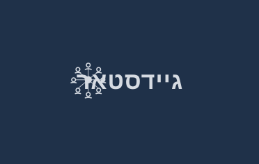
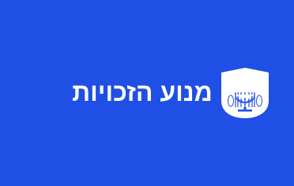
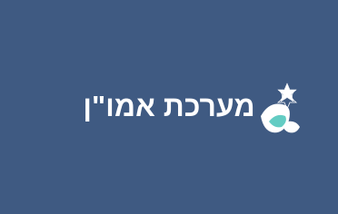

ניהול נשק, עובדים ורישוי בקלות ובמהירות - והכל במקום אחד!

מכון אבחוןמשרד הכלכלה
תל אביב
מזהה ארגון: 514557896

ישוב ראוימשרד הביטחון
ירושלים
מזהה ארגון: 203456712

מפעל ראוימשרד החינוך
חיפה
מזהה ארגון: 123443341
משרד התחבורה
באר שבע
מזהה ארגון: 987667890
משרד הרווחה
רמת גן
מזהה ארגון: 456776543
משרד האוצר
תל אביב
מזהה ארגון: 345665432